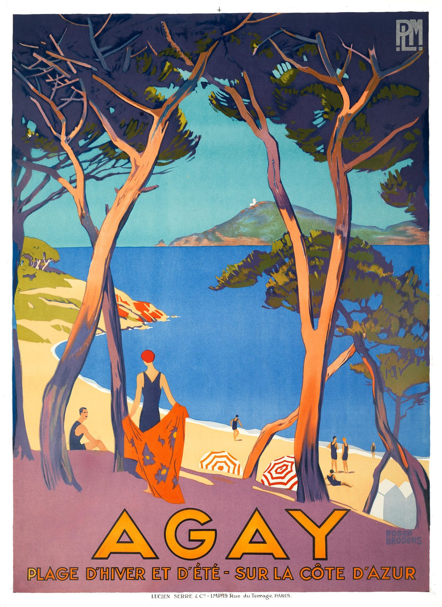

References / Poster / 07
Agay, PLM railway poster
Roger Broders’s travel poster for the PLM railway frames a Riviera bay between pine trunks and sets the resort’s name in large geometric capitals.
- Source
- Bonhams: AGAY, PLM, lot 246, 3 June 2021
- Creator
- Roger Broders
- Made
- 1928
- Style
- Art Deco (agent-proposed, not yet reviewed by a person)
- Moods
- Optimistic, sunny, stylized
- Evidence
- Downloaded and inspected the scan on Wikimedia Commons (2100 × 2880 px), which Commons sources from the Bonhams lot photograph. Read the Bonhams lot page with WebFetch.
- Reviewed
- Rights
- Open license, stored. License: public domain. Rights policy

Context
Bonhams catalogued the poster as “AGAY, PLM”, Roger Broders (1883–1953), 1928, lithographic poster in colours printed by Lucien Serre & Cie., Paris, 107 × 78.5 cm, in its 20th Century Decorative Arts & Design sale of 3 June 2021. Bonhams.
PLM is the Chemins de fer de Paris à Lyon et à la Méditerranée, whose monogram appears at the upper right. Commons files the poster under that company’s advertising posters. Commons.
Observed
- Tall pine trunks in orange and violet frame a view of a deep blue bay, a green headland, and a small lighthouse.
- A woman in a black swimsuit and a red cloche cap stands in the foreground holding an orange wrap printed with dark flowers; a man sits at left.
- Striped red-and-white parasols and small bathers dot the beach.
- Color is laid in flat areas with little modelling: navy, violet, turquoise, orange, and cream.
- “AGAY” is set very large in orange geometric sans-serif capitals with a dark outline and wide spacing, centered at the foot of the poster.
- A second line in smaller orange capitals reads “PLAGE D’HIVER ET D’ÉTÉ - SUR LA CÔTE D’AZUR”. The PLM monogram sits in a gray block at upper right.
- The landscape is asymmetrical and naturalistic in drawing; the geometry is in the lettering and the flat color.
Why it belongs
This is Art Deco as commercial travel imagery: the resort is sold through modern fashion, flat stylized color, and a monumental capital title, while the scene itself stays pictorial.
It is a weaker match than the architecture and furniture references for symmetry and ornament; it is here for its lettering and palette.
Borrow
Set a short place name very large in geometric capitals with an outline, centered at the foot of the composition.
Use a deep violet or navy ground with one warm orange accent.
Measured
Machine-extracted by tools/image-traits.py on . Full measurement.
- Mean chroma
- 0.27
- Palette
- #2d324e 12%
- #ffffff 9%
- #478eca 7%
- #bd8289 7%
- #7ec5c8 5%
- #a9717f 5%
- #fbd78e 5%
- #3b405c 4%

